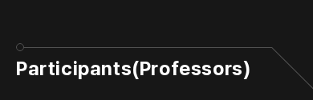
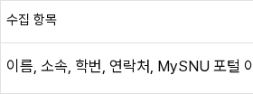
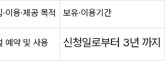

DS-040 · 긴 제목의 크기 유지와 줄바꿈
승인 · 실제 적용·대표 검증 완료기존 크기와 장식은 유지하고, 괄호 앞에서 줄바꿈
참가자 제목의 한영320/390/1280px 실제 이미지6장이 승인 견본과 바이트까지 일치했다. 다른 제목4개 경로의 한영 세 폭24개 상태도 기존 스타일과 이미지가 동일했다. 실제 측정30개 기록.
기존에320/390px에서 문서가412px까지 넓어지던 문제를 해결했다. 문구·굵기·색과 기존 크기인 작은 화면24px·데스크톱32px, 오른쪽 장식100px를 유지한다. 괄호 앞 줄바꿈 지점이 있는 제목에만 상자 폭 제한을 적용하며 다른 제목을 일괄 제한하지 않는다.
공개320px 검증 범위(DS-028)와 명확한 문제만 변경하는 원칙(DS-016)에 따른 변경이다. 작은 화면에서는 제목 높이가 약29px 늘고, 넓은 화면은 기존 한 줄을 유지한다.
320px · 실제 적용
 한국어 320px · 실제 적용 · 승인 견본 일치영어 320px · 실제 적용 · 승인 견본 일치
한국어 320px · 실제 적용 · 승인 견본 일치영어 320px · 실제 적용 · 승인 견본 일치390px · 실제 적용
한국어 390px · 실제 적용 · 승인 견본 일치 영어 390px · 실제 적용 · 승인 견본 일치
영어 390px · 실제 적용 · 승인 견본 일치 1280px · 실제 적용
 한국어 1280px · 실제 적용 · 승인 견본 일치영어 1280px · 실제 적용 · 승인 견본 일치
한국어 1280px · 실제 적용 · 승인 견본 일치영어 1280px · 실제 적용 · 승인 견본 일치확인한 범위와 남은 검토
인사말·공지 목록·학부 교과목·연구 분야의 한영320/390/1280px 총24개 상태가 기존 스타일과 동일했다. 모든 페이지의 넘침 해결이나 전체 회귀 완료를 뜻하지 않는다.
영어 교과목320px는 기존과 동일하게 문서 폭364px이며 긴 경로 안내(breadcrumb)의 넘침이 남는다. 다음 별도 검토 묶음으로 비교 자료를 준비 중이다. 접근성 후속은 마지막에 진행한다.
개인정보 표는 실제 가로 스크롤로 마지막 열을 읽을 수 있어 기존 표·글자 크기·문구를 유지한다. 에디터 내부나 공유 본문 스타일은 수정하지 않았다.
규칙·적용 범위·검증 한계 · 실제 적용 측정 · 통합 검증 현황
LT-Q1 승인 당시 비교와 개인정보 표 확인 기록
아래는 실제 앱 적용 전 브라우저 DOM에서 만든 승인 견본이다. 현재 적용 결과는 위 실제 캡처와 측정 기록을 따른다. 승인 견본 측정.
320px · 기존 → 승인 견본
기존: 문서 폭412px. 오른쪽 장식이 화면 밖으로 나간다. 승인 견본: 문서 폭320px.24px·굵기·색과 장식100px 공간 유지.
승인 견본: 문서 폭320px.24px·굵기·색과 장식100px 공간 유지. 390px · 같은 규칙의 승인 견본

기존 문서 폭412px. 승인 견본은 화면 안390px. 한영 모두 같은 제목과 배치.
승인 견본은 화면 안390px. 한영 모두 같은 제목과 배치.1280px 승인 견본에서는 기존 한 줄 그대로이며 기존/승인안 캡처가 같다. 이후 실제 앱 이미지도 승인 견본과 일치했다. 데스크톱 승인 견본.
확인 완료 · 개인정보 표는 기존 가로 스크롤 유지
오른쪽이 안 보이는 정지 이미지와 달리, 실제로 표 안에서 가로 스크롤해 모든 열을 읽을 수 있었다. 이 화면은 새로 수정하지 않는다.

320px · 시작
320px · 가로 이동 후 마지막 열